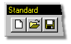
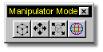

Now that you have a basic understanding of the interface layout, you should
familiarize yourself with the tools you will be using most often. These include
File Management/Manipulation, View Control, and Mode Control tools.
Now that you have a basic understanding of the interface layout, you should
familiarize yourself with the tools you will be using most often. These include
File Management/Manipulation, View Control, and Mode Control tools.
The File Management Buttons are located on the Standard Toolbar. These tools can also be accessed through the File Menu Drop Down. Click on any of the buttons below for more information about that button.

The View Control Buttons are located on the Navigation Toolbar. These tools allow you to change your view into a window. They do not in any way manipulate or modify your scene. Click on any of the buttons below for more information about that button.

Each window that is opened defaults to a front view, which means that you are looking from the front into the 3D universe you are working in. To learn how to change this view other than using the Turn button, click
here .
Even more control over the view can be gained by arranging the windows in such a way that different views can be seen at the same time. To learn how to see more than one view at a time, click
here
The Mode Control Buttons are located on the Mode Toolbar. They are very important for accessing many of the features of this software. Click on any of the buttons below for more information about that button.

Finally, the manipulator modes.
